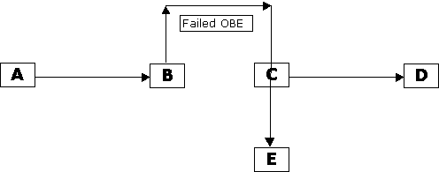
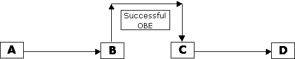
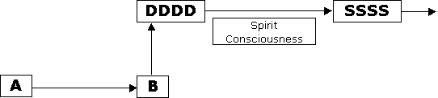

(An Indepth Explanation)
The Question:
I Received Astral Dynamics the other day and I found it rather dispiriting. If the mind split theory is true then why bother to do astral projection at all? If this is a copy of ME that leaves the body and not Me what's the point, to just get some memories?
If the mind split theory is true isn't it logic to think that it is a copy of Us that survives death and not Us? In that case why bother to do anything in life, Why try to progress spiritually if all we have in the end is this world? I could shoot myself right now if that's true it wouldn't make any difference to me.
When the mind split theory was introduced in the "treatise" I was clinging to the idea that you implied that there was ONE consciousness center that shifted between the bodies but the description of your experience of mind split in "Astral dynamics" clearly establishes that there is two distinct conscousnesses, two "persons" (to Me my consciousness is Me). So I wonder What's the point? Is the spirit of my deceased mother my mother or just a copy of her?
I had some astral and even higher experiences in my life but I always believed it was Me who had them, now I'm not so sure, I feel like the girl in the movie Bladerunner when she learns that she is an artificial organism and that all the memories of her childhood were implants. It leaves me very empty and apathetic. Is there anything in your experience that could help me regain hope?
(RB) The nature of this question revolves around two points of view:
But back to the original question: which is more real: the gross physical body and mind, or the subtle perfection of the projected double. Each of them 'is' you, and each contains all your memories. And each is capable of standing alone and saying "I think, therefore I am". These two aspects of the same are intimately connected via the silver cord. The projected double is merely an extension of the physical body into another dimension. This can be likened to a deep sea diver, connected by an airline and radio to the surface. The diving suit is the projected double, but the mind/body (consciousness) inside the suit is real. But the diver cannot exist naked at such depth without the suit, just as the physical body cannot exist in the Astral. Whereas technology provides a way for the diver to travel the ocean depths, nature provides a way for the projector to travel the Astral Planes, i.e., The Astral Body.
I think the problem in understanding the mind split, as stated in the question, comes from considering the projected double to be a separate subtle body that operates independently from the physical body/mind. It therefore may seem to be something separate, another entity entirely that is difficult to relate to as being YOU. This may be especially so when you consider that the physical body/mind is sometimes not privy to its own OBE gathered memories.
What one must consider is that the projected double is YOU in every respect. One must also look at the principles involved: what actually happens during an OBE.
In diagram #1:
We see normal waking consciousness with no breaks in it; as if you had stayed
awake all night trying to have an OBE, but failed. The result is a sleepless
night with no break in your memory stream for that time period. With A
being the start of the time period and D being the end result, i.e.,
unbroken memories for that time period.
Diagram #1:
In diagram #2:
We see a similar time period, but where dream and/or OBE occurred and the
memories of these have failed. Note the gap in the memory stream between B
and C. B is where you fell asleep (or started an OBE) and
C is where it ended. D is of course the end result, i.e., the
memories gathered for that time period.
Diagram #2:
In diagram #3:
We see a similar time period, where dream and OBE memories have failed to
successfully download into the physical brain/mind; the only permanent memory
recorder the physical mind has access to from its normal waking state. A
- D denotes the whole time period. B - C denotes the OBE
from exit/start to reentry/end. D = the resulting memories successfully
recorded by the physical brain. E = the OBE memories downloaded and
stored in inaccessible levels of subconscious and unconscious memory: still
recorded by the physical body/brain/mind, but stored in such a way they are not
accessible to the conscious mind in its normal waking state. The OBE still
happened but the projector is not privy to memory of them.
Diagram #3:

In diagram #4:
We see a similar time period, but this time where dream and OBE memories have
succeeded in downloading into the physical body/mind/brain; into the normal
level of memory accessible to the normal level of waking consciousness, i.e., a
successful OBE, with the full exit out of body, the full OBE experience, and the
full reentry, being successfully recorded. As you can see, with a successful OBE
there is no break in consciousness, nor is there any break in the memory stream
for this whole time period. All OBE memories are 'firsthand' experience, just
like any memory gained by the physical body during its day to day life. What has
happened here is that the OBE memories of the projected double have
'overwritten' any memories the physical body/mind has recorded during the OBE,
neatly replacing them as if they never existed.
Diagram #4:

So it becomes clear that the original memories recorded by the physical body/brain/mind can be overwritten by the projected double if conditions are right. But the physical body/brain/mind also as the ability to overwrite memories gained by the projected double, that is if conditions are not right for a successful OBE memory download. So what does all the above tell us? This tells us that each type of memory gathering process shares very similar memory storage properties as the other. This makes the projected double much more solid and tangible than a mere projected copy. It is exactly the same as the physical body/mind/spirit and shares many of the same properties. The only reason it is easier for normal waking consciousness to store memories in its physical brain is because this aspect is much closer to its physical body. It is more closely enmeshed within the physical body and thus has stronger and more reliable memory storing links within its physical brain. This allows it to reliable store all of its waking memories in the physical brain.
In diagram #5:
We see the death process. This is similar to an OBE, but involves a permanent
rather than temporary exit out of body. In this case it can be said that both
the original as well as the copy have made the final exit out of body
'together'. They do this together because they are one and the same. They are
indivisible during this process. The essential animating spirit exits its
physical body as it becomes deceased. It no longer needs to manifest and
generate a projectable double while it sleeps. Death occurs at point B in
the diagram below, and consciousness (now called spirit consciousness)
evolves through D (D = the real-time double) to S ( S =
Spirit consciousness) to a different form of existence above the physical
dimension, ultimately graduating to one of the spirit worlds or heavens.
Diagram #5:

Imagine, for example, the deep sea diver discussed earlier, evolving to a higher level of existence by growing gills so he/she can breath seawater. The diver no longer needs his/her diving suit. The diver also no longer needs the lifeline connecting him/her to the boat (boat = physical body) that used to provide oxygen and communication with the surface. The evolved diver's natural environment is now beneath the waves. The evolved diver no longer needs to return to the surface. In fact, the evolved diver cannot easily return to the surface even if he/she wanted to. But if and when the evolved diver (spirit being) does revisit the surface, that diver will then need a different type of diving suit to sustain him/her. Relating this analogy to a deceased/evolved spirit, then said spirit would need a diving suit/body made of ectoplasm, so it could manifest temporarily in a materialized ectoplasmic body within the physical dimension.
And if, as suggested by the original question, only a copy leaves the physical body during death and survives after the fact, one way of looking at it would be that the projected double (the copy) 'becomes' the original after death. One could even say that said copy had been promoted to become the original. The original question suggests that some people would like to believe in a more tangible projected double, and hence a more tangible spirit body surviving. But the physical body and its brain cannot exist in the astral and above. The only tangible thing it has is its spirit. And its spirit survives death; projecting permanently out of its physical body at the moment of death while its original physical body falls to dust.
On the matter of the death process, and of spirit and life after death: unlike studying and working with deceased spirits, the mind split theory is provable and 'repeatable' through firsthand OBE experience. This sets a strong precedence we can understand and build on. It provides us with a tangible window through which we can progress in our understanding of these matters.
I think those who cling tightly to the old empty-body model and rile against new and innovative metaphysical thought, e.g., the mind-split theory, may be exhibiting symptoms of a psychological defense mechanism. They may be trying to simplify and solidify their belief in the existance of their own spirits/souls into more tangible and central ruling aspects of their being. If spirit is simple and solid and exists by simple and easily understandable rules, then to some it might seem easier to believe in the existence of spirit. And consequentially it would be easier to believe in individual survival, i.e., that life and individuality continue after death. Perhaps more importantly to some is the belief that individual personality and memory continue after death. But if you do this you slide back into the old single body, single mind/spirit, empty body model. And this model, apart from being totally illogical when all the evidence is weighed, does not allow for the progression of understanding in these matters.
The mind split theory goes well against partisan theory and belief. This I do not dispute. And I have made the understanding of OBE (and by default the death process) somewhat more complex than it used to be. This I also do not dispute. But nor do I apologized for either. This was done through sheer, mind-numbing necessity. To my way of thinking the mind split theory is the only way the complexities of OBE can be understood in a logical way. That the mind split theory can be extended to logically cover other aspects of spirit and the death process, and give us a way of relating to and understanding these a little, is purely coincidental. My many years of intense study of OBE phenomena resulted in the mind split theory. This is the only logical conclusion possible given the evidence and repeatable firsthand experience I have to work with. I have tested and retested the mind split theory countless times. I always experience the same phenomenon and therefore always come to the same conclusion, i.e., that the mind splits during OBE. Many other projectors have also tested and validated the mind split theory for themselves. And this is the very best thing anyone can do; prove it for themselves.
If you delve into esoteric, mystical (religious?) history and lore, you will come across many accounts of masters and Yogi's and deities that are (or have been) omnipresent. Omnipresence means they can be in more than one place at one time; sometimes in many places simultaneously. And if you look at the nature of God: in that He is everywhere all at once; and also that God exists within each and every one of us (all at the same time) then this sets a very strong precedence indeed. It is therefore conceivable, even reasonable, to suggest that the mind split effect during OBE is tangible evidence (at a much lower level of course) that omnipresence is valid and real. Think about it?
To comment on the mention of shifting the centre of consciousness back and forth between the physical body and its projected double during OBE: the man posing the original question stated he clung to this as it allowed him to understand and accept a seemingly singular transfer of existence into multiple aspects of himself, easier than he could accept the mind split theory. This shift of consciousness back and forth is part of the old 'empty body' theory; an amendment to it if you like. This amendment allowed people to work 'around' the mind split theory and account for mind split phenomena, i.e., duality experiences that they could not properly account for at that time. Robert Muldoon, for example, tried to account for duality experiences by suggesting that the eyes and ears (organs of the physical body) kept working during OBE, and that this sensory input was automatically recorded by the physical brain while the spirit/soul was absent from its body. And therefore, sometimes memories would be recorded by the physical body while its spirit/soul was out, and that these memories were thus present when the spirit/soul returned, thereby causing memories of dual existence, i.e., of being out of body and flying across town, while also being able to hear the clock ticking on the wall near the physical body.
To put it in a nutshell, I'd like to reassure one and all that you are 'the real you' in your physical body, and also 'the real you' in your projected double during an OBE, and that you will also be 'the real you' as a spirit after you die. And that your parent's spirits would also be 'your real parent's spirits' when they visits you. There is NO essential difference between these aspects, i.e., physical, Astral and spirit. Each contains the real centre of consciousness and spirit, with each manifesting in a slightly different form; with each form being best suited to a particular environment; depending upon its state of being at the time.
If you ponder all the above, you see the dire consequences of not accounting for the mind split effect. One could liken this to science trying to keep the old 'Flat Earth Theory' in modern times. By necessity it would have to continually discount observations and bend and break the rules of physics, in order to hold onto this antiquated misconception. It would not be long, if something like this happened, before science would come to a complete full stop. Its understanding of the complexities of the universe would never be able to progress past this point. And it most certainly would never have been able to place a man upon the moon.
By this same logic, without the mind split theory (and other metaphysical discoveries) our understanding of metaphysical phenomena and interdimensional relationships would stay floundering against the antiquated full stop it is experiencing today, i.e., it would never be able to progress past the empty body theory. But if we can progress in our understanding of these matters, what fine things might we be able to accomplish one day. Maybe even the metaphysical equivalent of placing a man upon the moon. Per Ardua Ad Astra (Through Travail To The Stars!)
In closing I'd like to offer an analogy and a choice to all who might think OBE only results in secondhand experiences; secondhand via the projected double that is. Imagine you were given an ultra-modern Virtual Reality machine. And that this machine had every tiny detail about our planet and the goings on of humanity fed into it, automatically updated live by satellite, to create a real-time environment inside the virtual world. Now tell me, would you refuse to use this machine to travel and explore the world simply because YOU would not actually enter virtual reality? Would you refuse to use it because YOU were only experiencing everything secondhand while inside virtual reality? This is actually a very good way of describing the projected double, as a virtual body existing within virtual worlds that are created by reflections of universal consciousness.